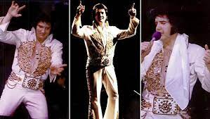

Дискография Элвиса Пресли

Прижизненные синглы (1954—1977)
В данном списке представлены все синглы Элвиса Пресли, изданные официально на территории США лейблом RCA Records,
включая первые 5 синглов, которые вышли на Sun Records (их особенностью является также то, что они проигрывались на
скорости 78 об/мин). Исключены все переиздания.
Прижизненные мини-альбомы (1956—1973)
В данном списке представлены все оригинальные мини-альбомы (EP), изданные официально на территории США лейблом RCA
Records.
- 1956 Elvis Presley, vol. 1
- 1956 Elvis Presley, vol. 2
- 1956 The Real Elvis
Прижизненные альбомы (1956—1977)
В данном списке представлены все долгоиграющие пластинки Элвиса Пресли, изданные официально на территории США лейблом
RCA.
- 1956 Elvis Presley Студийный альбом
- 1956 Elvis Студийный альбом
- 1957 Loving You Студийный альбом — звуковая дорожка к фильму «Любить тебя»
Наиболее значительные альбомы, изданные после смерти (1980-)
В данном списке представлены альбомы, содержащие либо неизданные ранее записи (концертные и студийные дубли), либо
важнейшие антологии, полностью охватывающие различные аспекты дискографии Пресли. Указаны лишь те, что изданы
официаль но на территории США лейблом RCA Records.
- 1980 Elvis Aron Presley Собрание неизданных ранее студийных дублей, концертных записей и выступления в Далласе в
1975 г. (8 пластинок)
- 1981 Guitar Man Студийный альбом — известные песни перезаписаны с новыми музыкантами
- 1981 This Is A Elvis Сборник — звуковая дорожка к фильму «Это Элвис».
Содержание:
- 07/1954 That’s All Right / Blue Moon of Kentucky
- 09/1954 I Don’t Care if the Sun Don’t Shine / Good Rockin' Tonight
- 01/1955 Milkcow Blues Boogie / You’re a Heartbreaker